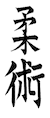
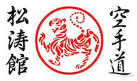
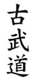

Welcome to the Northwest Budokan martial arts school. We are located inside of Naydenov Gymnastics in Vancouver, WA.
  The martial arts program here is centered around providing men, women and children of all ages with a safe, fun environment in which to develop valuable skills of self-protection, character development, and fitness, while learning Japanese martial arts. The one-of-a-kind curriculum incorporates three martial art styles, listed to the left.
Make Karate your way of life!